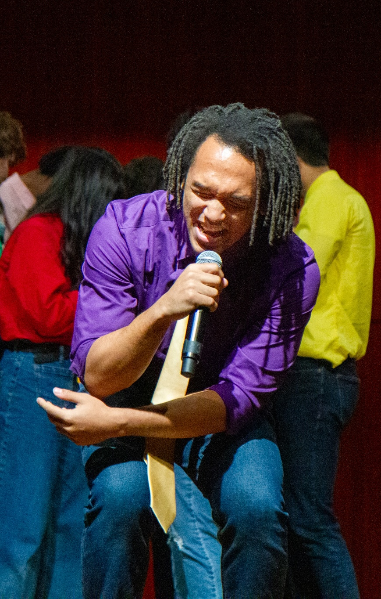

Explore some of my recent film cues below.
A selection of my recent scoring to picture, including rescores and original film projects.
MIT Student Film
Animated short by ESMA
Animated Short by Glow Production
MIT Documentary Short Film
Clay Lewis is a film composer and technologist whose work bridges the gap between deep orchestral traditions and modern technology. Specializing in detailed orchestral mockups, cinematic harmonic theories, and hybrid thriller scores, Lewis seamlessly integrates advanced software workflows with acoustic orchestration. He is a recent graduate of the Massachusetts Institute of Technology (MIT), where he earned a Bachelor of Science in Music with a minor in Computer Science. This fall, he will continue his career in the Screen Scoring Master’s program at the University of Southern California (USC) Thornton School of Music.
During his undergraduate career, Lewis studied composition under renowned mentors Elena Ruehr, Charles Shadle, and Evan Ziporyn. In addition to composing, he possesses a strong background in audio and video engineering. As a production intern for the national organization The Last Mile, Lewis developed specialized educational media and engineered audio sessions to deliver technical training curriculum to incarcerated individuals.
Lewis has scored a diverse range of professional and indie films. Notably, he composed the score and produced the music for the MIT parody student film Log Log Land, which received critical praise from The Boston Globe. His artistic excellence and contributions to the field have been recognized with the MIT Jerome B. Wiesner Student Art Award, the Ragnar and Margaret Naess Certificate of Distinction in the Arts, and the Warren Prize in Scoring for Motion Picture and TV.

If you'd like to collaborate on an upcoming project, discuss scoring needs for your film, or simply connect, feel free to reach out using the form below.